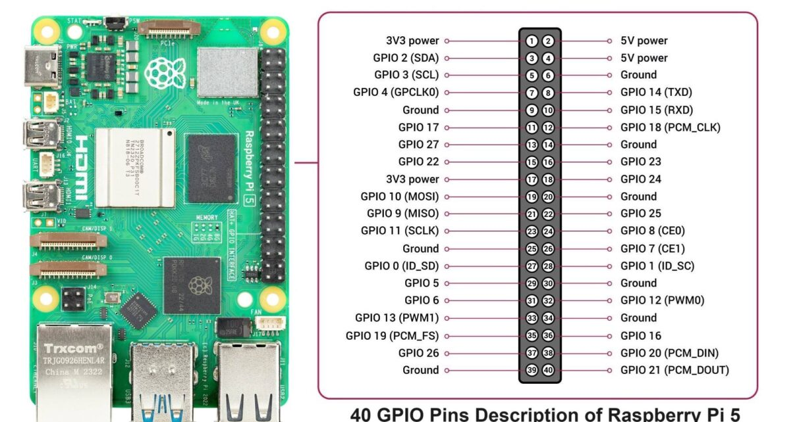

📖 Jump to Section ▼
⚖️ Microcontroller vs. Microprocessor — #1 Exam Topic
Microcontroller = single chip with CPU + RAM + Flash + I/O, no OS, one task.
Microprocessor (Raspberry Pi) = high-performance CPU, needs external RAM/storage, runs a full Linux OS, can multitask like a PC.
🤖 Microcontroller (Arduino / ESP32)
- All-in-one chip (CPU + RAM + Flash + I/O)
- Designed for a single dedicated task
- Very low power consumption
- No OS — runs bare-metal code
- Limited RAM: 2KB (Arduino), 520KB (ESP32)
- Low clock: 16–240 MHz
- Cannot run Linux or Windows
- Best for: sensor reading, actuator control
🍓 Microprocessor (Raspberry Pi 5)
- High-performance CPU — needs external RAM, MicroSD
- Can run a full OS (Linux)
- Higher power: 5V / ~5A
- Runs 32-bit and 64-bit programs
- Large RAM: 4–16 GB
- Fast clock: 2.4 GHz
- Can multitask like a full PC
- Best for: ML, image processing, servers
Home Security System Scenario (exam-style 3-mark question)
Sensor Nodes → Use microcontrollers (Arduino/ESP32): low power, simple task (detect motion), cheap, run on battery.
Central Hub → Use Raspberry Pi (microprocessor): receives all sensor data, runs web dashboard, processes camera feeds, sends email alerts — needs full OS and computing power.
🍓 Raspberry Pi 5 Overview
Raspberry Pi 5 is the latest and most powerful Raspberry Pi. It's a credit card-sized Single Board Computer (SBC) that runs a full Linux OS. It has a motherboard-like design — you connect your own keyboard, mouse, and display.
- Compatible with Raspberry Pi OS (Linux-based)
- Requires a microSD card for storage and OS boot
- Can run both 32-bit and 64-bit programs
- Interoperable with any input/output hardware via GPIO
- Powered by USB-C (5V / 5A)
📸 Raspberry Pi Board Diagram

40-pin GPIO header = top-left corner | GPIO HIGH = 3.3V (NOT 5V like Arduino)
CSI port = camera connector | USB-C = power input (5V/5A for Pi 5)
MicroSD slot = bottom side (OS + storage)
⚙️ Raspberry Pi 5 — Full Specifications
| Specification | Value |
|---|---|
| CPU | Broadcom BCM2712, Quad-core Cortex-A76 @ 2.4 GHz (64-bit) |
| RAM | 4 GB or 8 GB LPDDR4X-4267 SDRAM |
| WiFi | Dual-band 802.11ac (2.4 GHz and 5 GHz) |
| Bluetooth | Bluetooth 5.0 + BLE |
| Ethernet | Gigabit Ethernet (PoE+ supported) |
| USB Ports | 2× USB 3.0 (blue) + 2× USB 2.0 (black) |
| GPIO | Standard 40-pin GPIO header |
| Display/Camera | 2× MIPI CSI/DSI ports (camera or display) |
| HDMI | 2× micro-HDMI (up to 4Kp60) |
| PCIe | PCIe 2.0 ×1 FFC connector (new in Pi 5!) |
| Storage | MicroSD card (UHS-I) + NVMe via PCIe |
| Power | 5V / 5A USB-C (27W recommended) |
| RTC | Real-Time Clock with battery connector |
| GPIO Voltage | HIGH = 3.3V, LOW = 0V |
Pi 5 (2023): 2× faster CPU (A76 @ 2.4GHz vs A72 @ 1.5GHz) · PCIe 2.0 for NVMe SSD · RTC built-in · RP1 I/O chip — completely redesigned I/O · Better camera support · New power button
📌 GPIO Pins — General Purpose Input/Output
GPIO pins let Raspberry Pi control and communicate with external electronics (LEDs, buttons, sensors). They provide two-way exchange of information between software and hardware.
Raspberry Pi GPIO: HIGH = 3.3V, LOW = 0V
Arduino GPIO: HIGH = 5V, LOW = 0V
⚠️ NEVER connect 5V directly to Pi GPIO — it will damage the Pi!
GPIO Numbering Systems
- BCM (Broadcom) Numbering — used in code. e.g., GPIO14, GPIO25. This is what gpiozero uses.
- Physical Pin Number — the actual position on the 40-pin header. GPIO14 = Physical Pin 8.
- In the lab we always use BCM numbering in code.
⚠️ Cannot use GPIO 0 and GPIO 1 for LED circuits — they are reserved for I2C EEPROM ID. Use GPIO 2 and above.
40-Pin GPIO Header — Key Pins
GND Pin Function (exam question!)
GND (Ground) is the 0V reference point for all circuits. It completes the electrical circuit — current flows from the voltage source (3.3V or 5V), through the component, and returns to GND. Without GND, no circuit works.
🛠️ Setting Up Raspberry Pi
Required Hardware
- Raspberry Pi 5 board
- USB-C power supply (5V / 5A — 27W recommended for Pi 5)
- MicroSD card (minimum 8GB, Class 10)
- USB Keyboard + USB Mouse
- Monitor with micro-HDMI cable
OS Installation (Raspberry Pi Imager)
Download Raspberry Pi Imager
Visit raspberrypi.com/software → download Imager for your OS (Windows/Mac/Linux).
Flash SD Card
Insert microSD into computer. In Imager: Choose Device → Choose OS (Raspberry Pi OS) → Choose Storage (SD card) → Write.
Connect Hardware
Insert SD card. Connect mouse, keyboard, micro-HDMI to HDMI0 port (nearest power). Connect power last.
Setup Wizard
Pi boots → follow welcome wizard: set Country, Language, Timezone, password, WiFi. Update software. Restart.
🐍 gpiozero Library — Key Functions
The gpiozero library provides easy Python interfaces for electronics. Pre-installed on Raspberry Pi OS.
LED Wiring for Lab
gpiozero LED Functions — Know These!
| Function/Property | What it does | Example |
|---|---|---|
| LED(pin) | Create an LED object on given GPIO pin | led = LED(14) |
| led.on() | Set GPIO HIGH (3.3V) → LED turns ON | led.on() |
| led.off() | Set GPIO LOW (0V) → LED turns OFF | led.off() |
| led.toggle() | Reverses current state (ON→OFF or OFF→ON) | led.toggle() |
| led.blink() | Automatically blinks LED (background thread) | led.blink(on_time=1, off_time=1) |
| Button(pin) | Create a button object (with internal pull-up) | btn = Button(2) |
| button.is_pressed | True if button is pressed, else False | if button.is_pressed: |
| button.when_pressed | Assign a function to run when pressed | button.when_pressed = led.on |
| button.when_released | Assign a function to run when released | button.when_released = led.off |
| pause() | Keep script running forever (from signal import pause) | pause() |
🐍 Python Code Examples
Basic LED Blink with sleep()
Simpler Blink with toggle()
Button Controlling LED (when_pressed / when_released)
Without pause(), the script would exit immediately after setting up the button callbacks. pause() keeps the program alive to listen for button press events indefinitely.
Multiple LEDs (Traffic Light pattern)
GPIO pins allow the Raspberry Pi to interface with the physical world — controlling LEDs, reading sensors, driving motors. Without GPIO, the Pi would be limited to software-only tasks. GPIO bridges software and hardware, enabling IoT and embedded projects.